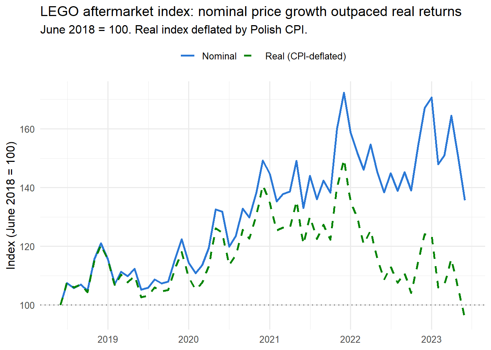
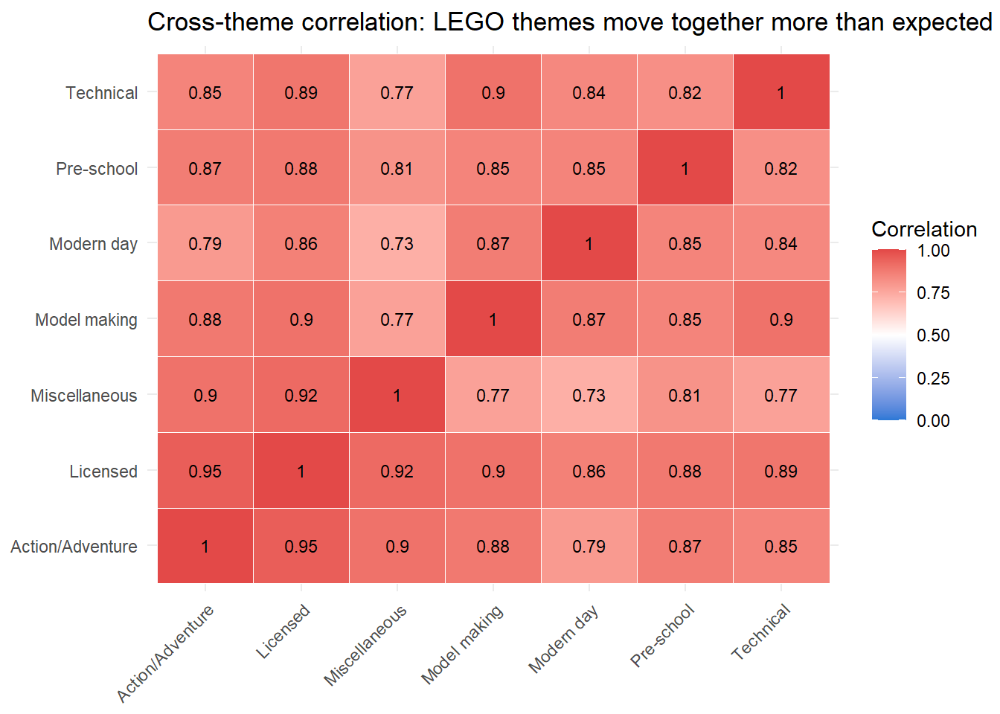
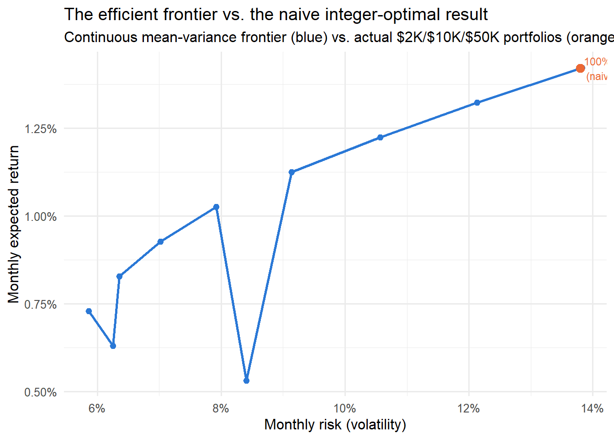

Building an Optimal LEGO Portfolio Under a Budget Constraint
How much does indivisibility cost a collectibles investor?
Author
Jeffrey Lee
Published
July 20, 2026
Code
library(tidyverse)
── Attaching core tidyverse packages ──────────────────────── tidyverse 2.0.0 ──
✔ dplyr 1.2.1 ✔ readr 2.2.0
✔ forcats 1.0.1 ✔ stringr 1.6.0
✔ ggplot2 4.0.3 ✔ tibble 3.3.1
✔ lubridate 1.9.5 ✔ tidyr 1.3.2
✔ purrr 1.2.2
── Conflicts ────────────────────────────────────────── tidyverse_conflicts() ──
✖ dplyr::filter() masks stats::filter()
✖ dplyr::lag() masks stats::lag()
ℹ Use the conflicted package (<http://conflicted.r-lib.org/>) to force all conflicts to become errors
Code
library(scales)
Attaching package: 'scales'
The following object is masked from 'package:purrr':
discard
The following object is masked from 'package:readr':
col_factor
Given a fixed budget, this project asks: what does an optimal LEGO aftermarket portfolio actually look like, and how much of the classic portfolio-theory toolkit survives contact with an illiquid, indivisible, thin-data collectible market?
Three findings, in order of importance:
Nominal price stability masked a real decline. LEGO’s złoty aftermarket price rose steadily from 2018 to 2023, but after adjusting for Polish inflation, real purchasing-power returns peaked in late 2021 and ended below the 2018 starting point by June 2023.
LEGO theme groups do not diversify each other as well as expected. Cross-theme correlations of 0.73 to 0.95 contradict the naive assumption that a “collectibles” asset class is internally diversified. Most themes move together, likely riding the same shared macro and market conditions.
A naive return-maximizing optimizer, ignoring risk, concentrates 100% of any budget into a single theme (Technical), at $2K, $10K, and $50K alike. A properly risk-adjusted mean-variance frontier finds a genuinely different answer: at the minimum-risk point, a portfolio of roughly 46% Licensed, 21% Miscellaneous, 20% Pre-school, and 13% Action/Adventure achieves 5.8% monthly volatility, lower than any single theme held alone, including Licensed on its own (6.5%), while giving zero allocation to Technical.
The honest headline: naive optimization on this asset class is actively misleading. Rigor changes the answer.
Data and method
The analysis uses 150971 cleaned set-month price observations across 7012 LEGO sets, June 2018 through June 2023, sourced from an open academic dataset (Oczkoś, Podgórski, Szczepańska & Boiński, 2024, Data in Brief 52:110056, CC BY 4.0), combining aftermarket transaction data (promoklocki.pl) with Brickset set characteristics.
A matched-set hedonic regression (R’s fixest) estimates monthly price indices while controlling for pieces, minifigure count, and theme, absorbing a separate fixed effect per month to avoid composition-drift bias from an unbalanced panel (793 sets tracked in June 2018, rising to 2,558 by mid-2021, falling to 974 by June 2023). Prices are deflated using Poland’s monthly CPI (FRED series POLCPALTT01IXNBM). Portfolio construction compares a mixed-integer program (ompr/GLPK) against a continuous quadratic mean-variance frontier (CVXR), both using the same underlying covariance structure.
The price index: nominal vs. real
Code
overall_index |>mutate(Date =as.Date(paste0(Date, "-01"))) |>ggplot(aes(x = Date)) +geom_line(aes(y = nominal_index, color ="Nominal"), linewidth =1) +geom_line(aes(y = real_index, color ="Real (CPI-deflated)"), linewidth =1, linetype ="dashed") +geom_hline(yintercept =100, linetype ="dotted", color ="gray50") +scale_color_manual(values =c("Nominal"="#2a78d6", "Real (CPI-deflated)"="#008300")) +labs(title ="LEGO aftermarket index: nominal price growth outpaced real returns",subtitle ="June 2018 = 100. Real index deflated by Polish CPI.",x =NULL, y ="Index (June 2018 = 100)", color =NULL ) +theme_minimal(base_size =12) +theme(legend.position ="top")

By June 2023, the nominal index stood at 135.7 while the real, inflation-adjusted index had fallen to 95.4, below its June 2018 starting value. The gap between the two lines is entirely attributable to Polish inflation, which accelerated sharply through 2022.
Do LEGO theme groups diversify each other?
Code
cm <- correlation_matrixcm_df <-as.data.frame(as.table(cm))names(cm_df) <-c("theme1", "theme2", "correlation")ggplot(cm_df, aes(x = theme1, y = theme2, fill = correlation)) +geom_tile(color ="white") +geom_text(aes(label =round(correlation, 2)), size =3) +scale_fill_gradient2(low ="#2a78d6", mid ="white", high ="#e34948", midpoint =0.5, limits =c(0,1)) +labs(title ="Cross-theme correlation: LEGO themes move together more than expected",x =NULL, y =NULL, fill ="Correlation") +theme_minimal(base_size =11) +theme(axis.text.x =element_text(angle =45, hjust =1), legend.position ="right")

Every pairwise correlation between the seven major theme groups falls between 0.73 and 0.95, all strongly positive. This contradicts the intra-asset-class diversification thesis common in the collectibles-as-investment literature (e.g., Masset & Weisskopf, 2010, on wine): rather than moving independently, LEGO theme groups appear to share substantial common variation, likely driven by shared macroeconomic conditions and overall market sentiment absorbed into the same monthly fixed effects.
Technical is both the highest-return and highest-risk theme; Licensed is the steadiest. This spread is what makes the diversification question meaningful, and what the correlation matrix above shows isn’t being exploited by simple allocation rules.
The efficient frontier: what indivisibility costs you
Code
ggplot(frontier, aes(x = achieved_risk, y = target_return)) +geom_line(color ="#2a78d6", linewidth =1) +geom_point(color ="#2a78d6", size =2) +geom_point(data =tibble(risk =0.138, ret =0.0142, label ="100% Technical\n(naive integer result,\nall budgets)"),aes(x = risk, y = ret), color ="#eb6834", size =3 ) +geom_text(data =tibble(risk =0.138, ret =0.0142, label ="100% Technical\n(naive result, all budgets)"),aes(x = risk, y = ret, label = label), hjust =-0.05, size =3, color ="#eb6834" ) +scale_x_continuous(labels =percent_format()) +scale_y_continuous(labels =percent_format()) +labs(title ="The efficient frontier vs. the naive integer-optimal result",subtitle ="Continuous mean-variance frontier (blue) vs. actual $2K/$10K/$50K portfolios (orange)",x ="Monthly risk (volatility)", y ="Monthly expected return" ) +theme_minimal(base_size =12)

The naive integer-constrained optimizer, used at all three budget levels, sits at the extreme right edge of the frontier: full Technical concentration, 1.42% return at 13.8% risk. The frontier shows the same 0.0142 return is only achievable this way, but far better risk/return tradeoffs exist elsewhere on the curve.
The minimum-risk diversified portfolio
At the frontier’s absolute minimum-risk point, no target return imposed, the optimizer allocates:
This portfolio achieves 5.84% monthly volatility, below every single theme’s own individual volatility, including Licensed alone (6.5%). Three themes, including Technical, the highest-return theme in isolation, receive zero allocation: their risk contribution outweighs their return benefit once genuine covariance with the rest of the portfolio is accounted for. This is the concrete answer the naive integer-constrained portfolios (all-Technical, at every budget) fail to reach.
These are the outputs of the naive return-maximizing integer program, shown deliberately unmodified: at every budget tested, the optimizer concentrates entirely in Technical sets. This is not a data artifact. It is the mathematically correct behavior of a linear objective with a single budget constraint, sometimes called the “knapsack” property: without a risk term, the optimal solution is always to fill the budget with the single best per-dollar asset. A tested linear risk penalty (return minus a volatility term) failed to change this outcome at any reasonable penalty weight, confirming that true diversification requires the quadratic covariance term used in the frontier above, not a simple per-asset penalty.
Honest limitations
Illiquidity correction was investigated, not applied. The standard Getmansky-Lo-Makarov unsmoothing correction assumes positive return autocorrelation from appraisal-style smoothing. This data instead showed negative autocorrelation (-0.09 to -0.35 across themes), consistent with month-to-month regression estimation noise from thin trading in some theme-months, rather than classic illiquidity smoothing. Applying the standard correction would have been methodologically inappropriate; raw volatility is reported instead, with this caveat.
Individual sets inherit their theme’s expected return, since 61 months of data cannot support reliable per-set return estimates for 6,072 individual sets. This is a real approximation, not a limitation unique to this analysis. It mirrors how thin-trading asset classes are typically handled in practice.
Prices are the most recently observed price per set (up to June 2023), not live market prices. This is historical, not real-time, portfolio guidance.
The frontier is built at the theme level (7 assets), not the individual-set level (6,072 assets), because a reliable 6,072x6,072 covariance matrix is not estimable from 61 months of data. The integer-constrained portfolios operate at the set level; the frontier operates at the theme level. This is why the two are compared rather than unified into a single unconstrained-vs-constrained model.
The minimum-risk portfolio weights above were computed as a separate, one-off analysis and are not yet part of the regenerable 04_optimize.R pipeline; a future revision should fold this computation into that script so the whole report regenerates from a single reproducible source.